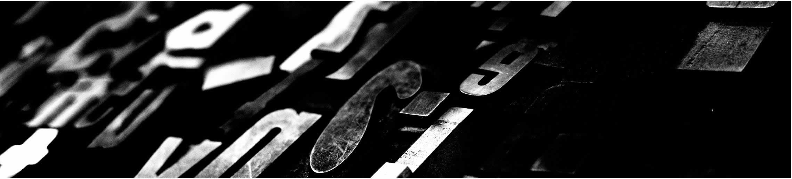

Upper limits on the UVB (HI photoionization rate) obtained with MUSE stacking and EAGLE simulation constraints in contrast with current observations and models.

The intensity of the Cosmic UV background (UVB), coming from all sources of ionization such as star-forming galaxies and quasars, determines the thermal evolution and ionization state of the Intergalactic Medium (IGM) and it is, therefore, a critical ingredient for cosmic structure formation models. Most estimates, based on the comparison between the observed and simulated Lyman alpha forest, rely on model parameters that are difficult to constraint with current observations. I develop a new and independent method to constraint the UVB by detecting the fluorescent Lyman alpha emission produced by self-shielded clouds that are illuminated by the UVB. Because the expected surface brightness is well below current observational limits for individual detections, our current results are based on three-dimensional stacking of the IGM around galaxies, combined with mock cubes extracted from cosmological simulations.
Upper limits on the UVB (HI photoionization rate) obtained with MUSE stacking and EAGLE simulation constraints in contrast with current observations and models.